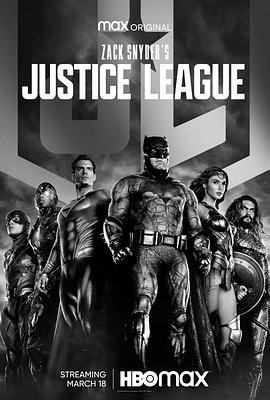

扎克·施奈德版正义联盟 / Zack Snyder's Justice League
又名：正义联盟：扎克·施耐德版 / 萨克·薛达之正义联盟(港) / 查克·史奈德之正义联盟(台) / 正义联盟导演剪辑版 / 正义联盟 扎克·施奈德导演剪辑版 / Justice League Snyder Cut
还不错，看到4：3确实惊了，而且片中能看出来有些片段拍摄的时候没想好要剪成4：3，人被砍断了。电影看起来很像电视剧，也很像游戏，主要指视角方面。澳洲这边binge平台只有1080p有点扫兴😅 另外很多画面cg感非常严重，感觉dc没有marvel资金充足的感觉
作品信息
| 导演 | 扎克·施奈德 |
| 编剧 | 扎克·施奈德 / 克里斯·特里奥 / 威尔·比尔 / 杰里·西格尔 / 乔·舒斯特 |
| 主演 | 本·阿弗莱克 / 亨利·卡维尔 / 盖尔·加朵 / 杰森·莫玛 / 埃兹拉·米勒 / 雷·费舍尔 / 艾米·亚当斯 / 威廉·达福 / 杰西·艾森伯格 / 杰瑞米·艾恩斯 / 戴安·琳恩 / 康妮·尼尔森 / J·K·西蒙斯 / 塞伦·希德 / 郑恺 / 安珀·赫德 / 乔·莫顿 / 丽莎·洛文·孔斯利 / 大卫·休里斯 / 安·奥戈博莫 / 奥古斯塔·艾娃·艾伦德斯杜提尔 / 克里斯特比约格·凯尔德 / 英格瓦·埃盖特·西古德松 / 马克·麦克卢尔 / 迈克尔·麦克埃尔哈顿 / 约翰·达格尔什 / 拉腊·德坎罗 / 罗比·基 / 吉姆·斯图格恩 / 杜晨·科洛斯 / 埃莉诺·松浦 / 萨曼莎·乔 / 布鲁克·恩斯 / 杰罗姆·普拉顿 / 理查德·克里弗特 / 文森特·里奥特 / 马克·阿诺德 / 彼得·吉尼斯 / 赛吉·康斯坦斯 / 奥萝尔·劳泽瑞尔 / 朱利安·刘易斯·琼斯 / 雷·波特 / 弗朗西斯·麦基 / 科雷西·克莱门斯 / 露西·布莱尔斯 / 威尔·柯班 / 凯伦·布莱森 / 克里斯蒂·梅尔 / 吉安皮罗·科格诺利 / 寇布勒·霍尔德布鲁克-史密斯 / 凯文·马图林 / 泰勒·詹姆斯 / 布鲁斯·钟 / 奥赖恩·李 / 奥利弗·加茨 / 凯莉·波尔克 / 奥利弗·鲍威尔 / 哈里·列尼斯 / 欧米·罗斯 / 萨姆·本杰明 / 卡拉·古奇诺 / 罗素·克劳 / 扎克·施奈德 |
| 类型 | 动作 / 科幻 / 奇幻 / 冒险 |
| 制片国家/地区 | 美国 |
| 语言 | 英语 |
| 上映日期 | 2021-05-03(中国大陆网络) / 2021-03-18(美国) |
| 片长 | 242分钟 |
| IMDb | tt12361974 |
说过什么
2021-03-18 20:28:47
看过 · 时间来自广播，短评来自标记页
还不错，看到4：3确实惊了，而且片中能看出来有些片段拍摄的时候没想好要剪成4：3，人被砍断了。电影看起来很像电视剧，也很像游戏，主要指视角方面。澳洲这边binge平台只有1080p有点扫兴😅 另外很多画面cg感非常严重，感觉dc没有marvel资金充足的感觉
最后一次看到是 2026-08-01T11:05:23+10:00 · 豆瓣原页